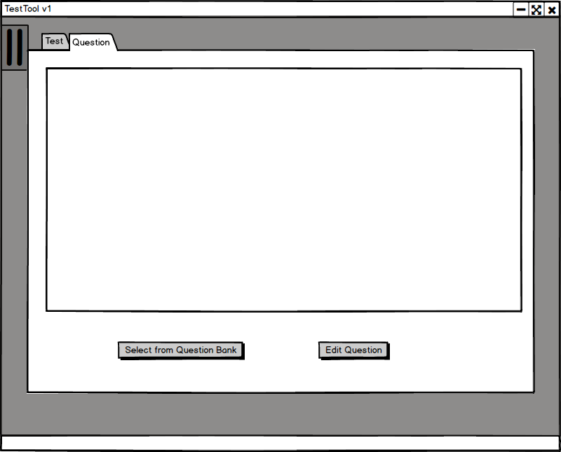
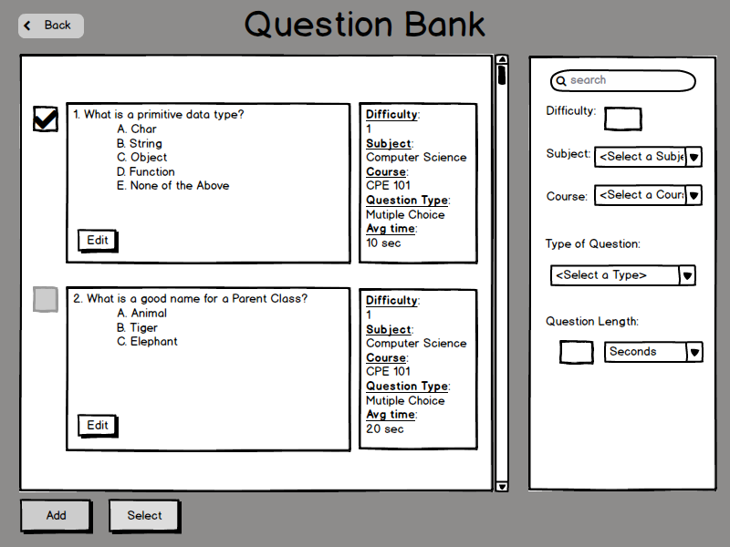
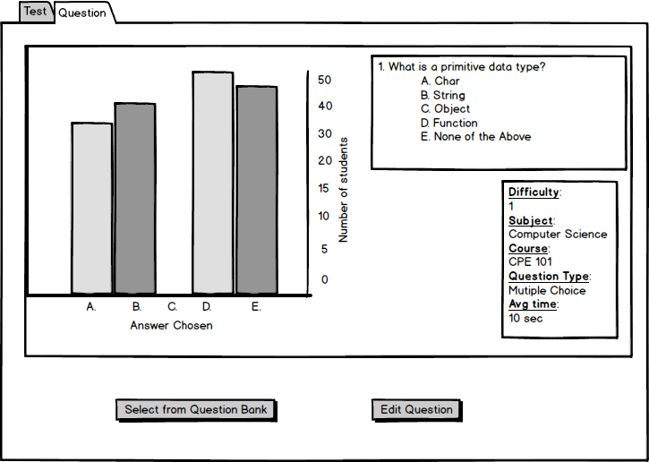

The user selects Statistics in the Menu tab and the Question tab, the system
displays the dialog shown in Figure 2.7.4.4.

Figure 2.7.4.4: Question Statistic dialog.
The top half of the dialog is initially an empty rectangluar box. The Select from Question Bank button opens up the Question Bank dialog. The user clicks the Select from Test Bank and the Graded Test Bank Dialog opens in front of the Question Statistic screen.

Figure 2.7.4.5: Question Bank for Statistics
The Question Bank dialog opens with no modifiers on any of the search fields. Only one questions's statistics can be viewed at a time. The user choses one question by checking the box and the rest of the checkboxes will gray out indicating only one question can be chosen. When the user has chosen the correct question the user clicks the Select button. This transitions back to the Test Statistics dialog.

Figure 2.7.4.6: Question Statistic dialog with chart.
The chart is populated with the data from the selected question. The chart shows the number of students that have chosen a particular answer. For a multiple choice problem the possible answer choices are represented in the x axis. The y axis represents the number of students that have answered the question. For free response or programming quesitons the x axis is changed to represent the number of possible points a student may recieve for a particular question. To the right of the chart contains more information on the chosen question. In the box in the top is the question as stated on the test. The bottom right of the rectangular area contains specific information regarding the question.